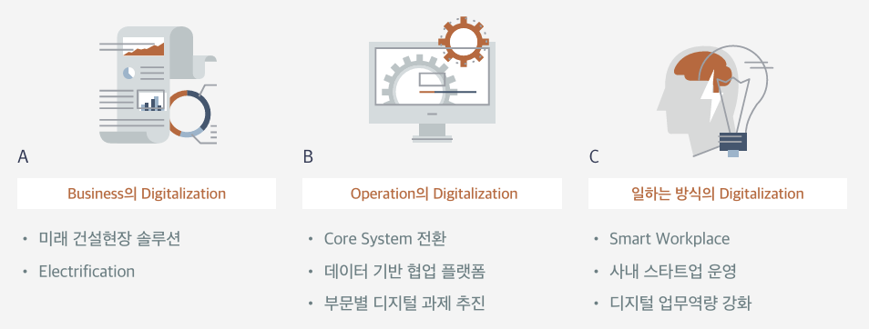
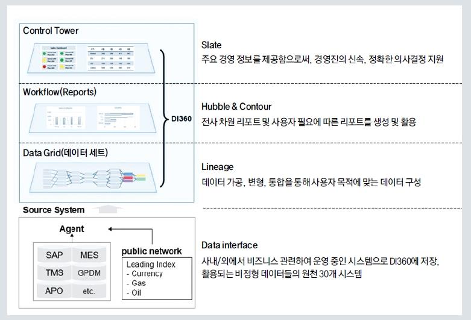
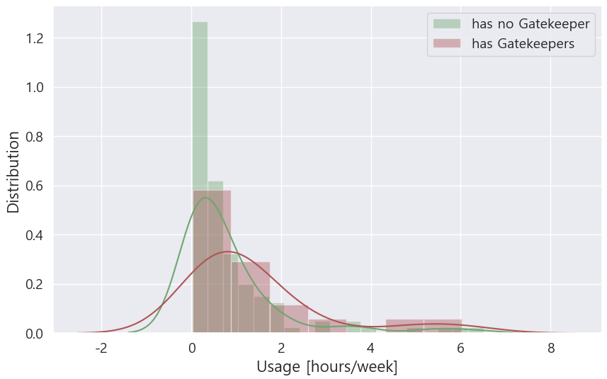
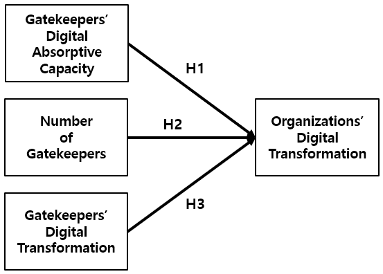

우리나라의 GDP 대비 제조업 비중은 27.8%에 달하며, 이로 인해 제조업의 디지털 체질을 강화하는 것이 무엇보다 중요하다. 그러나 비제조업에 비해 제조업의 디지털 전환 수준은 상대적으로 낮은 편이다. 본 연구는 국내 최초로 팔란티어(Palantir)의 빅데이터 플랫폼을 도입하여 디지털 전환 성공 사례로 주목받고 있는 HD현대인프라코어를 중심으로, 그 성공 요인을 분석하며, 특히 Gatekeeper가 조직의 디지털 전환에 미치는 영향을 정량적으로 실증한다.
- 우리나라의 제조업은 경제에서 차지하는 비중이 매우 높아 제조업의 디지털 체질 강화를 위한 노력이 필수적이나, 비제조업에 비해 제조업의 디지털 전환 수준은 상대적으로 낮은 상황으로 이를 촉진하기 위한 연구가 요구되고 있다.
- 본 연구는 국내 제조 기업 중 디지털 전환의 성공 사례로 주목받고 있는 HD현대인프라코어를 중심으로 디지털 전환의 성공 요인을 분석하였다.
- 디지털 전환의 성공에는 조직적 측면의 요인이 중요한 역할을 하였으며, 강력한 리더십, 조직 문화의 변화, 전담 조직 보유, Gatekeeper 양성이 주요한 요인으로 나타났다. 특히, Gatekeeper 양성을 통해 Agile 업무 방식과 데이터 기반 의사결정 문화를 전 직원으로 확산한 전략이 크게 기여한 것으로 나타났다.
- Gatekeeper는 조직 간 디지털 전환 수준의 차이에 영향을 미치며, 조직 내 Gatekeeper의 디지털 흡수 역량, 수, 그리고 디지털 전환 수준이 조직원의 디지털 전환 수준과 유의미한 양의 상관관계를 갖는 것으로 밝혀졌다.
- 디지털 전환에서 Gatekeeper의 역할에 대한 연구가 부족한 상황에서, 본 연구는 하나의 기업 사례를 통해 그 기여를 실증적으로 증명하였다는 의의가 있으며, 디지털 전환을 준비하는 제조 기업에 대한 시사점을 제공한다.
1. 서론
디지털 전환에 대한 높은 관심에도 불구하고, 우리나라의 디지털 전환 수준은 여전히 낮은 상황에 처해 있다. 한국산업기술진흥협회의 조사에 따르면, 디지털 전환을 적극적으로 추진하는 국내 기업은 9.7%에 불과하며, 일부 추진 중인 기업(20.9%)을 포함하더라도 그 비율은 30.6% 수준에 이른다. 중견기업 실태조사에서 응답자의 49.8%가 대응 수준이 1단계라고 밝혔으며, 32.5%는 0단계로 응답하여 평균 수준이 0.9단계로 나타났고, 4단계(성숙기)라고 응답한 기업은 1.2%에 그쳤다.
2021년 두산그룹에서 HD현대그룹으로 편입된 HD현대인프라코어는 건설 중장비와 엔진 등을 생산·판매하는 회사로, 국내 최초로 팔란티어의 빅데이터 플랫폼을 도입한 기업이며 디지털 전환의 성공 사례로 주목받고 있다. HD현대그룹은 이러한 성공을 바탕으로 팔란티어와의 합작사 설립을 준비하며, 모든 계열사에 플랫폼을 도입하고 있다.
2. 이론적 배경
디지털 전환
Gong and Ribiere (2021)는 디지털 전환을 "핵심 자원과 능력의 전략적 활용을 기반으로, 혁신적인 디지털 기술의 사용을 통해 가능해진 근본적인 변화 과정"으로 정의한다. 아날로그 정보를 디지털로 변환하는 Digitization, 운영 수준(Operational Level)에서의 점진적 개선에 초점을 맞춘 Digitalization과 달리, 디지털 전환은 근본적이고 급진적(Radical)인 변화를 수반하며 새로운 구조, 문화 및 전략을 요구한다. 성공 요인은 기술, 조직 및 환경적 측면으로 구분되는데, Kane (2019)의 연구에 따르면 그 해결책은 기술에 있지 않으며, 민첩하고 혁신적이지 못한 조직과 변화하지 못하는 문화가 문제의 핵심이 된다. 제조업 디지털 전환에 관한 연구(Vogelsang et al., 2018)에서도 조직 측면의 요소들이 가장 중요한 것으로 나타났다.
Gatekeeper
조직으로의 새로운 정보의 유입은 조직 내 기술자들의 조직 밖 개인들과 접촉 및 소통에 의해 이루어진다. 하지만 모든 기술자들이 외부와의 소통에 능한 것이 아니다. 조직 내에는 다른 구성원들이 상당히 의존하는 몇몇 핵심 인물들이 존재하는데, Thomas J. Allen은 이들을 "Technological Gatekeeper"로 정의했다. 새로운 정보는 Gatekeeper를 통해 조직으로 유입되고, Gatekeeper Network를 통해 다른 구성원에게 전파된다. Cohen and Levinthal(1990)의 흡수 역량(Absorptive Capacity) 관점에서 Gatekeeper는 외부 환경을 지속적으로 모니터링하고, 내부 직원들이 이해하기 어려운 정보를 효과적으로 전달하여 지식의 흡수, 매개 및 확산에 기여한다. 이러한 역할을 수행하지 않는다면 조직은 자발적인 학습을 할 수 없게 되며, 혁신 프로세스는 정체될 수밖에 없다.
3. HD현대인프라코어의 디지털 전환 사례
디지털 전략
HD현대인프라코어는 전통적인 제조업체가 직면한 한계와 위기에 선제적으로 대응하고자 다음과 같이 세 가지 디지털 전략을 마련하였다. 첫째, 비즈니스의 디지털화 — 장비의 전동화와 건설 현장 통합 관제 솔루션 등을 통해 새로운 사업 창출. 둘째, 운영(Operation)의 디지털화 — 제품 개발, 영업, 생산 등에서 데이터 기반의 의사결정 체계 확보. 셋째, 일하는 방식의 디지털화 — 데이터에 기반한 의사결정을 내리는 문화를 확산하는 것이다.

빅데이터 플랫폼 선택
가장 큰 난관은 데이터 사일로(Data Silo)였다. 전사에 방대한 데이터가 축적되어 있었으나, 각 시스템 간의 데이터 연결이 원활하지 않아 의미 있는 인사이트를 도출하는 데 어려움이 있었다. HD현대인프라코어는 2018년부터 수십 개의 기업과 접촉한 결과, 최종적으로 팔란티어를 선택했다. 당시 팔란티어는 미국에서 주목받는 유니콘 기업이었지나, 국내에서는 상대적으로 낯선 외국 기업이었다. 이처럼 익숙하지 않은 스타트업의 솔루션에 즉각 투자하기 어려웠던 HD현대인프라코어는 팔란티어의 영국 런던 지사를 방문하여 에어버스(Airbus)의 빅데이터 플랫폼 Skywise를 포함한 기존 기업들의 모범 사례(Best Practice)를 직접 확인한 뒤, 2019년 4월에 전략적 파트너십을 체결하였다.
빅데이터 플랫폼 구축
파트너십 체결 이후, 플랫폼이라는 광장(Square)에 데이터를 모아 제곱(Square) 비례로 집단 지성을 발전시키기 위한 'Square TF팀'이 발족하였다. 이 팀은 공급망 관리(SCM)와 필드 클레임 및 품질 관리(FCQM)를 시작으로, 2020년에는 구매, AM, R&D, 생산 부문으로 순차적으로 확대했으며, 현업 전문가를 TF팀에 합류시켜 현업의 필요가 효과적으로 반영될 수 있도록 하였다.
TF팀은 필요한 의사결정을 파악하고 해결하고자 하는 비즈니스 문제를 먼저 정의한 후, 비즈니스 영향도로 우선순위를 정한 뒤 필요한 데이터를 정의했다. 팔란티어의 Foundry 시스템을 활용하여 원천 시스템의 데이터를 연결하고 가공, 변형, 통합하는 데이터 파이프라인(Data Lineage)을 구축하였으며, 이렇게 형성된 빅데이터 플랫폼은 Data Intelligence와 360도 전방위 분석을 통합하여 "DI360"이라는 명칭으로 2020년 전사에 도입되었다.

빅데이터 플랫폼 활용과 Best Practice
직원들이 강조한 DI360의 장점은 세 가지로 요약될 수 있다. 첫째, 영역별 시스템에 각각 로그인하여 데이터를 수집하던 비효율이 제거되어, 보고서 작성 시간이 획기적으로 단축되었다. 둘째, 장비 일련 번호 하나로 생산, 판매 및 고객 사용 정보를 손쉽게 확인할 수 있다. 셋째, 한 번의 로직 설정으로 리포트가 실시간으로 자동 업데이트되며, 이를 통해 누구나 데이터를 활용해 인사이트를 반영한 분석 리포트를 생성할 수 있게 되었다.
대표적인 모범 사례는 두 가지로 구분될 수 있다. 첫째, 장비의 원격 관리 시스템(Tele-Management System, TMS) 데이터를 활용하여 필드 고객의 사용 모드를 분석하고 이를 신제품 개발에 적용한 사례이다. 유럽 시장에 판매된 21톤 휠굴착기 중 절반가량이 프랑스 북동부의 사탕무(Sugar Beet) 작업장에서 운전되고 있으며, 최고 출력 모드 사용 비율이 50%에 도달한다는 사실은 GPS 및 TMS 데이터를 통해 확인되었다. 이에 따라 차세대 유럽 시장을 위한 21톤 휠굴착기는 최고 출력 모드의 성능 향상에 중점을 두어 개발되었다. 둘째, 건설기계 가치 사슬에서 총 탄소 배출량의 87.5%를 차지하는 제품 사용 단계의 탄소 배출량을 SCM 및 TMS 데이터를 통해 산정하고, 이를 바탕으로 굴착기 중대형 기종 중심의 탄소 저감 기술 로드맵(TRM)을 수립하였다.
4. HD현대인프라코어의 디지털 전환 성공 요인
강력한 리더십
HD현대인프라코어는 별도의 CDO 직책 없이 당시 CEO였던 손동연 사장이 직접 디지털 전환을 주도하였으며, 전략 및 디지털 부문장은 당시 박용만 회장의 아들로서 강력한 지원을 받았다. 국내에서 잘 알려지지 않았던 팔란티어를 파트너로 선정한 것과 80억 원이라는 대규모 투자를 단행할 수 있었던 배경 역시 이러한 리더십에 기인하였다. 손동연 CEO는 DI360 오픈 이후 각 부문 임원들에게 디지털 전환 과제를 찾아 실행할 것을 지시했고, 과제 결과 발표에서 관련 질문에 대해 담당 조직 임원이 직접 답변하도록 함으로써 각 조직의 리더들이 디지털 전환에 적극적으로 참여하도록 유도하였다.
조직 문화의 변화
맥킨지(McKinsey) 조사에 따르면, 디지털 시대의 성공을 저해하는 가장 큰 장애물로 조직 문화가 지목되었다. HD현대인프라코어는 팔란티어와의 협력을 통해 애자일(Agile)한 업무 문화에 점차 통합되어 갔다. 이 조직은 소규모 데이터셋을 활용하여 데이터 파이프라인과 워크플로우를 신속하게 구축하고 검증하여, 피드백을 반영한 수정 과정을 통해 과제를 확장해 나간다. 이는 Lean Startup의 Build-Measure-Learn Feedback Loop와 유사한 경향을 보인다. 이러한 업무 문화는 프로젝트가 종료 후에도 현업 롤아웃 과제에 동일하게 전이되어, 조직 전체가 애자일한 업무 문화를 학습하는 데 기여하고 있다.
전담 조직 보유
중견기업 중 디지털 전환을 추진하는 조직의 비율이 8.2%에 불과하며, 인력을 전혀 보유하지 못했다고 응답한 비율이 76.2%에 달하는 현실 속에서, HD현대인프라코어에는 전담 조직인 데이터 인텔리전스(Data Intelligence)팀을 운영하고 있다. DI360 출시 이후, Square TF팀에서 정식 팀으로 전환된 이 팀은 플랫폼 운영과 함께 전사적인 업무 방식 및 문화 변화에 기여하는 변화 관리(Change Management)를 담당하고 있다. 매월 하루를 교육의 날(Training Day)로 지정하여 각종 교육을 실시하였으며, 2021년에는 "DDD (Data-Driven Decision) Company" 캠페인을 통해 1년 동안 총 24개의 파일럿 과제를 진행하고, 6개의 모범 사례(Best Practice)를 포상하였다. 그 결과, 월 평균 DI360 사용 시간이 2020년 767시간에서 2022년 1,364시간으로 증가했으며, 월 평균 사용자 수 또한 163명에서 325명으로 두 배로 늘어났다.
Data Agent 양성 (Gatekeeper 양성)
HD현대인프라코어는 Gartner의 Citizen Data Scientist에 해당하는 인력을 'Data Agent'라 불렀는데, 이들은 혁신 연구의 Gatekeeper와 유사한 역할을 수행하였다. DDD Company 캠페인을 통해 총 24명의 Data Agent가 양성되었으며, Data Intelligence팀은 1년 동안 Basic 및 Advanced 교육을 집중적으로 지원하였다. Data Agent들은 직접 DI360을 활용하여 직접 수행한 과제의 경험을 각 팀에 전파하였다. Data Intelligence팀이 외부와 조직 간의 Gatekeeper 역할을 맡았다면, Data Agent는 조직 내 하위 단위 간의 지식과 문화를 전파하는 Gatekeeper의 역할을 담당하였다.
5. Gatekeeper가 디지털 전환에 미치는 영향
2022년 팀별 DI360 사용 현황을 조사한 결과, Gatekeeper를 보유한 팀에 소속된 팀원의 주간 평균 DI360 사용 시간은 그렇지 않은 팀원보다 유의미하게 높은 것으로 나타났다(t=1.847, P-value=0.033). 그러나 Gatekeeper를 보유한 팀 사이에서도 사용 시간에 차이가 있어, 이러한 차이를 분석하기 위해 다음과 같은 세 가지 가설을 설정하였다. H1: Gatekeeper의 디지털 흡수 역량이 조직원의 디지털 전환 수준과 양의 상관관계를 갖는다. H2: Gatekeeper의 수가 조직원의 디지털 전환 수준과 양의 상관관계를 갖는다. H3: Gatekeeper의 디지털 전환 수준이 각각 조직원의 디지털 전환 수준과 양의 상관관계를 갖는다.

2022년 DI360 사용 시간 데이터에 대한 분석은Gatekeeper를 보유한 20개 팀을 대상으로 수행되었다. 본 연구에서는 조직원의 주간 DI360 사용 시간을 종속변수로 설정하고, Gatekeeper의 역량(과제 평가 결과 1~3점), Gatekeeper의 수, 주간 사용 시간을 독립변수로 포함하였다. 또한, 팀의 기능(Function)을 통제변수로 고려하였다. 분석은 Stata 소프트웨어를 이용하여 다중회귀분석을 실시하였다. 분석 결과, 세 독립변수 모두 종속변수에 대해 통계적으로 유의한 양의 영향을 미치는 것으로 나타났으며, 이는 세 가설이 모두 지지됨을 의미한다. 영향도(Coefficient)의 크기는 Gatekeeper의 수, 흡수 역량, 디지털 전환 수준 순으로 나타났다.

6. 결론
HD현대인프라코어의 디지털 전환 성공은 강력한 리더십, 조직 문화 변화, 전담 조직 보유, 그리고 Gatekeeper 양성 등과 같은 조직적 요인에 기인하며, Gatekeeper가 조직 간 디지털 전환 수준의 차이에 미치는 영향을 정량적으로 검증하였다. 이러한 결과는 혁신적인 IT 사용이 Gatekeeper에 의해 주도된다는 선행 연구와 일치한다. 다만, 기업 내부 데이터의 특성상 사용자들의 인구통계학적 정보(전공, 최종 학력 등)를 변수로 사용할 수 없었던 점은 한계로 남는다.
- 조직적 요인의 중요성을 강조하라: 기술적 요인만으로는 디지털 전환의 이점을 온전히 누릴 수 없다. CEO나 CDO와 같은 고위 경영진이 디지털 전환을 이끄는 디지털 리더십을 확보하고, 기술 지원뿐 아니라 업무 방식 및 문화 변화를 이끄는 변화 관리(Change Management)를 수행할 전담 조직을 구성해야 한다.
- 조직 내부의 인력을 이용하라: 디지털 전환 실패 사례의 70%는 종업원들의 반발에 기인한다. 조직 내부의 문화와 의사결정 과정의 핵심을 파악하고 있는 내부 전문가의 참여가 디지털 전환이 현업에서 최적화된 형태로 적용되는 것을 유도한다.
- 각 조직 내 Gatekeeper를 양성하라: 조직 내 Gatekeeper의 수가 많을수록, 그리고 디지털 흡수역량이 높을수록 조직의 디지털 전환 수준이 높아진다. 체계적이고 집중적인 교육으로 양적 및 질적 양성을 병행하고, 양성 이후에도 Gatekeeper가 꾸준히 산출물을 제작할 수 있도록 전담 조직의 지속적인 모니터링과 지원이 필요하다.